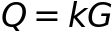

Double-and-add computes kG efficiently using the binary representation of k. The reverse problem, finding k from G and kG, is called the elliptic-curve discrete logarithm problem. On properly chosen large curves, this reverse problem is computationally infeasible.

Toy example: y² = x³ + 2x + 2 (mod 17), G = (5,1), 2G = (6,3), 3G = (10,6), and 19G = O.